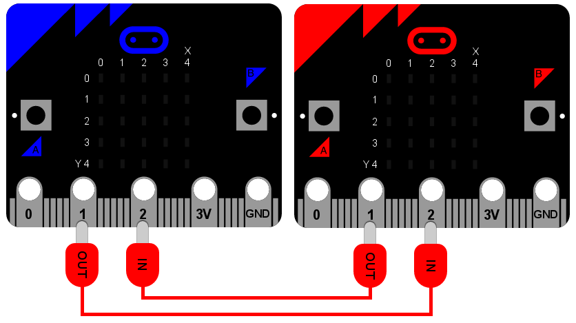

Sieť¶
Zariadenia vieme spájať a posielať a prijímať medzi nimi správy. Toto sa volá sieť. Sieť prepojených sietí sa nazýva internet. Internet s veľkým I je internetom všetkých internetov.
Sieťovanie je ťažké a to sa prejavuje aj na programe uvedenom nižšie. Ale krásne na tomto projekte je to, že obsahuje všetky bežné aspekty sieťového programovania. Je tiež až pozoruhodne jednoduchý a zábavný.
Ale najskôr si pripravme scénu…
Pripojenie¶
Predstav si sieť ako sériu vrstiev. Na úplnom spodku je najzákladnejší aspekt komunikácie: tu sa nejako musí dostať signál z jedného zariadenia na druhé. Toto sa niekedy robí pomocou rádiového spojenia, ale v tomto prípade to urobíme jednoducho pomocou káblov.
Na tomto základe vieme vystavať všetky ďalšie vrstvy siete.
Ako ukazuje diagram, modré a červené micro:bits sú prepojené pomocou krokodíliek. Obidva používajú pin 1 na výstup a pin 2 na vstup. Výstup z jedného zariadenie je spojený so vstupom na druhom. Je to trochu ako vedieť správne otočiť telefón - jeden koniec má mikrofón (vstup) a druhý má reproduktor (výstup). Nahrávka tvojho hlasu cez mikrofón sa púšťa do reproduktoru druhého telefónu. Ak držíš telefón naopak, dostaneš čudné výsledky!
V našom prípade je to úplne rovnaké: káble musíš pripojiť správne!
Signál¶
Ďalšou vrstvou vo vrstvách siete je signál. Ten bude často závisieť od charakteristík pripojenia. V našom príklade sú to jednoduché digitálne signály vypnuté a zapnuté, ktoré sa posielajú káblami cez IO piny.
Ak si spomínaš, IO piny vieme použiť takto:
pin1.write_digital(1) # switch the signal on
pin1.write_digital(0) # switch the signal off
input = pin2.read_digital() # read the value of the signal (either 1 or 0)
Ďalší krok obsahuje popis toho, ako použiť a spracovať signál. Na to budeme potrebovať…
Protokol¶
Ak sa niekedy pôjdeš stretnúť s kráľovnou, budú od teba očakávať nejaké správanie. Napríklad, keď príde, mal(a) by si sa ukloniť, ak ti podá ruku, máš ňou slušne potriasť, pri prvom oslovení jej musíš povedať „vaša výsosť“ a potom v ďalšom rozhovore „madam“ a tak ďalej. Tento súbor pravidiel sa nazýva kráľovský protokol. Protokol vysvetľuje, ako sa správať v určitých situáciách (napríklad pri stretnutí s kráľovnou). Protokol je definovaný vopred, takže každý už pred stretnutím vie, čo sa bude diať ešte predtým, ako situácia vôbec nastane.
Z toho istého dôvodu definujeme a používame protokoly na posielanie správ prostredníctvom počítačovej siete. Počítače sa najskôr musia dohodnúť, ako budú posielať a prijímať správy. Asi najznámejším protokolom je hyeprtextový prenosový protokol (HTTP), ktorý používa aj celosvetová sieť Internet.
Ďalší slávny protoko na posielanie správ (ešte z obdobia pred počítačmi) je Morseov kód. Ten definuje ako posielať správy zložené zo znakov pomocou dlhších a kratších signálov. Tieto signály sa často zahrajú ako pípnutia. Tie dlhšie sa volajú pomlčky (-) a kratšie nazývame bodky (.). Kombináciou pomlčiek a bodiek Morse definoval spôsob ako posielať znaky. Tu je napríklad definícia štandardnej Morseovej abecedy:
.- A .--- J ... S .---- 1 ----. 9
-... B -.- K - T ..--- 2 ----- 0
-.-. C .-.. L ..- U ...-- 3
-.. D -- M ...- V ....- 4
. E -. N .-- W ..... 5
..-. F --- O -..- X -.... 6
--. G .--. P -.-- Y --... 7
.... H --.- Q --.. Z ---.. 8
.. I .-. R
Podľa vyššie uvedenej tabuľky, na poslanie znaku „H“ musíme signál štyrikrát zapnúť na krátky čas, čo predstavuje štyri bodky (....). Na písmeno „L“ potrebujeme tiež štyri signály, ale druhý v poradí trvá dlhšie (.-..).
Samozrejme, aj načasovanie signálu je dôležité: musíme vedieť rodlíšiť bodku od pomlčky. To je ďalším bodom protokolu, dohodnúť také parametre, aby každý vedel ako správne implementovať protokol, aby fungoval s inými.V tomto prípade povieme:
- Signál kratší ako 250 milisekúnd je bodka.
- Signál dlhší ako 250 milisekúnd a kratší ako 500 milisekúnd je pomlčka.
- Všetky ostatné dĺžky ignorujeme.
- Prestávka / medzera medzi signálmi dlhšia ako 500 milisekúnd znamená koniec znaku.
In this way, the sending of a letter „H“ is defined as four „on“ signals that last no longer than 250 milliseconds each, followed by a pause of greater than 500 milliseconds (indicating the end of the character).
Správa¶
Konečne sme sa dostali niekam, kde môžeme vytvoriť správu - správu, ktorá už bude niečo hovoriť aj nám, ľuďom. Toto je najvyššia vrstva z našich „vrstiev siete“.
S použitím vyššie definovaného protokolu môžem cez kábel poslať túto sekvenciu signálov do druhého micro:bitu:
...././.-../.-../---/.--/---/.-./.-../-..
Vieš zistiť, čo je v nej zakódované?
Aplikácia¶
Je super mať vrstvy siete, ale potrebuješ aj vedieť s nimi narábať - nejakú aplikáciu na posielanie a prijímanie správ. Hoci HTTP protokol je zaujímavý, väčšina ľudí o ňom nevie a nestará sa, čo s ním robí ich prehliadač - vrstvy siete svetového webu (www) sú pred nimi schované (a tak by to aj malo byť).
Takže akú aplikáciu napíšeme pre micro:bit? Ako by mala fungovať z hľadiska používateľa?
Jasné, na posielanie správ by sme mali vedieť zadávať bodky a pomlčky (na to môžeme použiť tlačítko A). Ak chceme vidieť správu, ktorú sme poslali alebo práve prijali, mali by sme ju vedieť zobraziť, aby sa nám posúvala po displeji (na toto môžeme použiť tlačítko Bwe ). Nakoniec, keďže je to Morseov kód, ak je pripojený reproduktor, mali by sme vedieť zahrať užívateľovi pípnutia ako zvukovú odozvu počas tvorenia správy.
Výsledok¶
Tu je program, v cele svojej kráse s množstvom komentárov, takže si môžeš pozrieť, ako funguje:
from microbit import *
import music
# A lookup table of morse codes and associated characters.
MORSE_CODE_LOOKUP = {
".-": "A",
"-...": "B",
"-.-.": "C",
"-..": "D",
".": "E",
"..-.": "F",
"--.": "G",
"....": "H",
"..": "I",
".---": "J",
"-.-": "K",
".-..": "L",
"--": "M",
"-.": "N",
"---": "O",
".--.": "P",
"--.-": "Q",
".-.": "R",
"...": "S",
"-": "T",
"..-": "U",
"...-": "V",
".--": "W",
"-..-": "X",
"-.--": "Y",
"--..": "Z",
".----": "1",
"..---": "2",
"...--": "3",
"....-": "4",
".....": "5",
"-....": "6",
"--...": "7",
"---..": "8",
"----.": "9",
"-----": "0"
}
def decode(buffer):
# Attempts to get the buffer of Morse code data from the lookup table. If
# it's not there, just return a full stop.
return MORSE_CODE_LOOKUP.get(buffer, '.')
# How to display a single dot.
DOT = Image("00000:"
"00000:"
"00900:"
"00000:"
"00000:")
# How to display a single dash.
DASH = Image("00000:"
"00000:"
"09990:"
"00000:"
"00000:")
# To create a DOT you need to hold the button for less than 250ms.
DOT_THRESHOLD = 250
# To create a DASH you need to hold the button for less than 500ms.
DASH_THRESHOLD = 500
# Holds the incoming Morse signals.
buffer = ''
# Holds the translated Morse as characters.
message = ''
# The time from which the device has been waiting for the next keypress.
started_to_wait = running_time()
# Put the device in a loop to wait for and react to key presses.
while True:
# Work out how long the device has been waiting for a keypress.
waiting = running_time() - started_to_wait
# Reset the timestamp for the key_down_time.
key_down_time = None
# If button_a is held down, then...
while button_a.is_pressed():
# Play a beep - this is Morse code y'know ;-)
music.pitch(880, 10)
# Set pin1 (output) to "on"
pin1.write_digital(1)
# ...and if there's not a key_down_time then set it to now!
if not key_down_time:
key_down_time = running_time()
# Alternatively, if pin2 (input) is getting a signal, pretend it's a
# button_a key press...
while pin2.read_digital():
if not key_down_time:
key_down_time = running_time()
# Get the current time and call it key_up_time.
key_up_time = running_time()
# Set pin1 (output) to "off"
pin1.write_digital(0)
# If there's a key_down_time (created when button_a was first pressed
# down).
if key_down_time:
# ... then work out for how long it was pressed.
duration = key_up_time - key_down_time
# If the duration is less than the max length for a "dot" press...
if duration < DOT_THRESHOLD:
# ... then add a dot to the buffer containing incoming Morse codes
# and display a dot on the display.
buffer += '.'
display.show(DOT)
# Else, if the duration is less than the max length for a "dash"
# press... (but longer than that for a DOT ~ handled above)
elif duration < DASH_THRESHOLD:
# ... then add a dash to the buffer and display a dash.
buffer += '-'
display.show(DASH)
# Otherwise, any other sort of keypress duration is ignored (this isn't
# needed, but added for "understandability").
else:
pass
# The button press has been handled, so reset the time from which the
# device is starting to wait for a button press.
started_to_wait = running_time()
# Otherwise, there hasn't been a button_a press during this cycle of the
# loop, so check there's not been a pause to indicate an end of the
# incoming Morse code character. The pause must be longer than a DASH
# code's duration.
elif len(buffer) > 0 and waiting > DASH_THRESHOLD:
# There is a buffer and it's reached the end of a code so...
# Decode the incoming buffer.
character = decode(buffer)
# Reset the buffer to empty.
buffer = ''
# Show the decoded character.
display.show(character)
# Add the character to the message.
message += character
# Finally, if button_b was pressed while all the above was going on...
if button_b.was_pressed():
# ... display the message,
display.scroll(message)
# then reset it to empty (ready for a new message).
message = ''
Ako by si ho zlepšil(a)? Vedel(a) by si zmeniť definíciu bodky a pomlčky, aby rýchlejší užívatelia mohli zadávať znaky rýchlejšie? Čo sa stane, ak obidve zariadenia posielaju správu súčasne? Čo by si mohol/mohla urobiť, aby si predišiel/predišla takejto situácii?